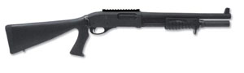
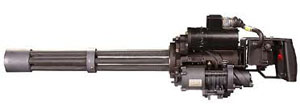
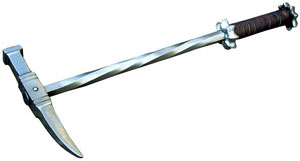
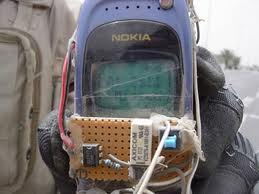
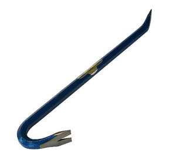
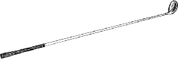
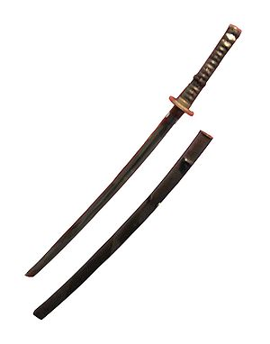

Shot Gun
The shot gun is the most versitile upclose gun for killing zombies. Every zombie exterminator should have at least one shotgun in their kit.
MiniGun
MiniGuns are not easy to find but if you are lucky enough to find one you are in for a good time. Nothing will make you enjoy your new found position of zombie exterminator more then mowing down groups of zombies with a MiniGun
Hammer
Hammers can be found laying around in houses and garages. One swift blow to a zombie's head with a hammer and that zombie is no longer an issue. Hammers are quiet and never run out of ammo.
Explosives
Explosives are one of the most fun way to kill zombies and can be the most effictive way to kill groups of zombies. There is nothing like seeing bits and pieces of zombies go flying through the air. Adding a sound or some bait to the explosive device can attract zombies from all over before the big bang. Just be careful to be at a safe distance before the big moment, nothing can ruin your day like taking a chunk of smoldering zombie brain to the face.
Crowbar
The Crowbar can be used to bash in zombie a zombies head. The Crowbar can be used reused, just be careful not to get it stuck in a zombies head.
Golf Club
A Golf Club can be used much like a Crowbar. I prefer a driver, it has a good weight and shape to easily smash in a zombie head. Like a Crowbar the Golf Club can be reused but you need to be careful not to get it stuck.
Ninja Sword
Swords can be an effective and fun way to dispatch zombies. With a good swing and a sharp sword a zombies head can be cut clean off. Not even a zombie can survive a good old fashion beheading.
